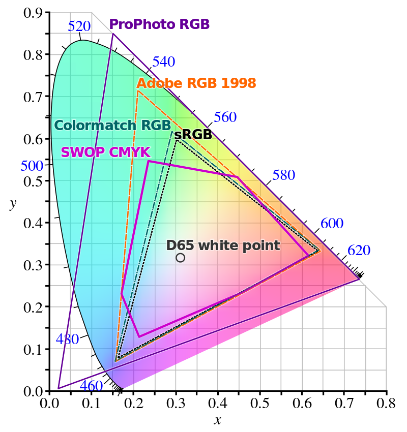
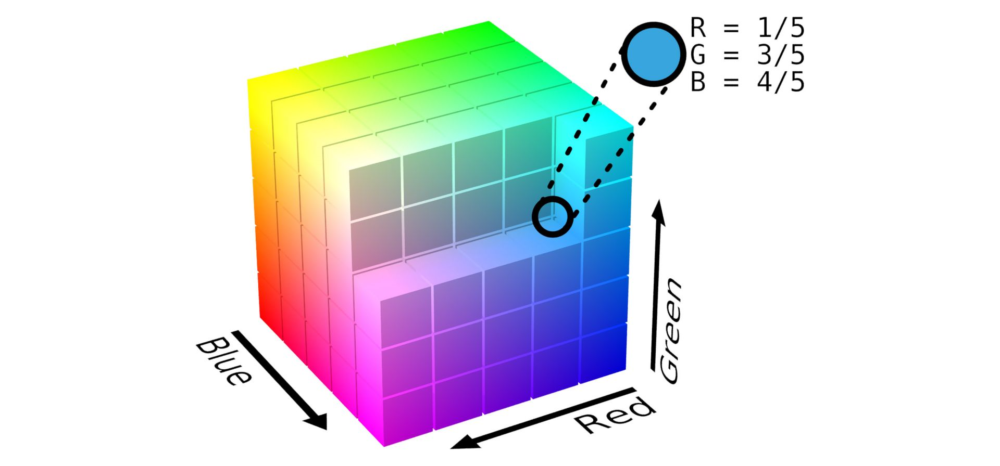
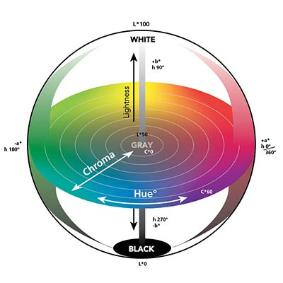

Understanding Color Spaces: A Comprehensive Guide
Color is an essential aspect of life, and it is prevalent in everything we see around us. From the vibrant colors of a sunset to the muted hues of a black and white photograph, color is an integral part of our visual experience. However, not all colors are created equal, and this is where color spaces come into play.
What are Color Spaces?
Color is an essential aspect of human perception and communication, and it plays a significant role in various fields, from art and design to science and technology. However, colors are not only subjective but also complex and multidimensional, making it necessary to have different models to represent them accurately.
What are the different Color Spaces?
A color space is a specific way of organizing colors in a digital image. It defines the range of colors that can be displayed or printed and how they are represented using numerical values. There are many different color spaces, and each has its own unique properties and uses.
CIE 1931 XYZ color space
The CIE 1931 XYZ color space was the first attempt to produce a color space based on measurements of human color perception and is the basis for most other color spaces. It is a three-dimensional color space, where the three axes or tristimulus values are calculated based on the sensitivity of the three types of cones in the human eye that are responsible for color vision. The CIEUVW color space is a modification of CIE 1931 XYZ that takes into account measurements over a larger field of view, producing slightly different results.
{kind=link}
Uniform color spaces
Uniform color spaces (UCSs) are built so that the same geometrical distance anywhere in the color space reflects the same amount of perceived color difference. There have been many attempts at building such a color space, and they are generally assigned such that one axis represents lightness and the other two represent chroma. A uniform color space is useful for a wide range of tasks, such as calculating color difference or selecting visually harmonious colors.
CIELUV and CIELAB
CIELUV is a modification of CIE 1931 XYZ that displays color differences more conveniently, making it useful for additive mixtures of lights. CIELAB produces a color space that is more perceptually linear than other color spaces, meaning that a change of the same amount in a color value should produce a change of about the same visual importance. This space is commonly used for surface colors but not for mixtures of transmitted light.
RGB Color Space
The RGB color space is an device dependent additive color model used in digital devices such as monitors, TVs, and cameras. It works by combining different amounts of red, green, and blue light to create a wide range of colors. The primary colors are red, green, and blue, and the secondary colors are cyan, magenta, and yellow. The RGB color model is device-dependent, meaning that the colors can vary depending on the device's characteristics, such as brightness and contrast. Examples of RGB color spaces are sRGB, Adobe RGB, Adobe Wide Gamut RGB, and Rec. 2100.
CMYK Color Space
CMYK, or Cyan-Magenta-Yellow-Black, is a subtractive color model that is used in printing. Unlike RGB, which starts with black and adds color, CMYK starts with white and subtracts color. This color space is used in printing to ensure that colors are accurate and consistent across different mediums.
Cylindrical color spaces
HSV and HSL: Hue, Saturation, Value/Lightness
The HSV and HSL color models are cylindrical color models that separate color into hue, saturation, and value/lightness. The HSV model is often used by artists, as it is more natural to think about a color in terms of hue and saturation than in terms of additive or subtractive color components. The HSL model is quite similar to HSV, but with "lightness" replacing "brightness." However, these models do not effectively separate color into their three value components according to human perception of color, and it can be challenging to adjust the saturation settings without altering perceptual lightness.
YUV and YCbCr: Luma and Chrominance
The YUV and YCbCr color models are linear methods used to separate lightness from chroma signals in an RGB input. They create a "luma" signal and two "chrominance" signals, making them useful in video compression and better compression.
LCh: Lightness, Chroma, Hue
The LCh color model is a uniform color space that separates color into lightness, chroma, and hue. It is used as a cylindrical transformation of other uniform color spaces such as CIELAB and CIELUV.
Recent color models
HSLuv is a newer color model that preserves the lightness and hue components of CIELUV LCh and stretches its chroma so that every color has the same range, defined as a percentage. However, newer color models such as the IPT color space and OKLab have been developed to improve upon CIELAB's shortcomings. IPT uses new data about hue to greatly improve on CIELAB's non-constant lines of hue, while OKLab uses IPT data for hue and a modern CAM (CAM16) to generate lightness and colorfulness data, resulting in an improved fit over human perception under the same structure. Color appearance models (CAMs) are mathematical models that seeks to describe the perceptual aspects of human color vision.
Other Color Spaces
Other color spaces, such as the Munsell color system, Natural Color System, Pantone Matching System, and RAL, have specific applications, such as standardized color reproduction, color matching, and color lists. The LMS color space is a perceptual color space used in psychophysical research, while the TSL color space is used in face and skin detection.
Why are Color Spaces Important?
Color spaces are essential in digital imaging because they help ensure that colors are accurately represented across different devices and media. For example, a digital image that looks great on a computer monitor may look completely different when printed in a magazine or displayed on a television.
Color spaces also play a critical role in color management, which is the process of ensuring that colors are consistent and accurate across different devices and media. This is especially important in industries such as printing and graphic design, where color accuracy is essential.
How to Choose the Right Color Space
Choosing the right color space depends on the specific needs of your project. For example, if you are creating a digital image that will only be viewed on a computer monitor, using the RGB color space is likely your best bet. However, if you are creating an image that will be printed in a magazine, using the CMYK color space is essential.
It is also important to consider the specific requirements of the project. For example, if the image needs to be color accurate across different devices and media, using a device-independent color space like LAB may be the best choice.
Conclusion
Color spaces play a critical role in digital imaging and color management. Understanding the different types of color spaces and their uses is essential for creating accurate and consistent images across different devices and media.
FAQs
- What is the difference between RGB and CMYK color spaces?
- What is a device-independent color space?
- What is color management?
- Why is color accuracy important in digital imaging?
• RGB is an additive color model used in displays such as computer monitors and televisions. CMYK is a subtractive color model used in printing. RGB starts with black and adds color, while CMYK starts with white and subtracts color.
• A device-independent color space is a color space that is not tied to any specific device or medium. It is designed to be more flexible and easy to use across different devices and media.
• Color management is the process of ensuring that colors are accurate and consistent across different devices and media. This is essential in industries such as printing and graphic design.
• Color accuracy is essential in digital imaging because it ensures that colors are represented accurately and consistently across different devices and media. This is especially important in industries such as printing, where even slight color variations can be noticeable and have a significant impact on the final product.
This text was written with help of ChatGPT.
If you're interested in learning more about this research, feel free to reach out!
Rik Spieringhs